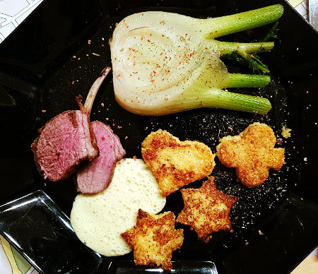

| Zutaten für 6 Personen: | |
| 200g | Griess |
| 8dl | Milch |
| 600g | Fenchel |
| 2 Stück zu 600g | Lammracks |
| Salz, Pfeffer, Paprika | |
| Bratbutter | |
| 0.5dl | Weisswein |
| 2 | Eigelb |
| 1 | Ei |
| 1 El | Senf |
| 1 Prise | Salz |
Griess mit Milch unter ständigem Rühren kurz aufkochen. Unter gelegentlichem Rühren auf kleiner Hitze ca.3 Minuten weichköchelnm. Die Masse auf ein Backblech giessen und ca. 1cm dick ausstrechen. Erkalten lassen.
Vom Fenchel das Kraut wegscheiden und beiseite legen. Die äusseren Fenchelteile mit dem Sparschäler abziehen. Fenchel unten frisch anscheiden und längs in fingerdicke Streifen schneiden.
Die Lammracks mit Salz, Pfeffer und Paprika einreiben und in einen Bräter legen. In einem Pfännchen 25g Bratbutter gut erhitzen und über das Fleisch giessen. In der Mitte in den 200°C heissen Ofen Ofen schieben und ca. 20 Minuten braten. Dabei die Lammracks gelegentlich mit Bratbutter begiessen.
Von der Griessmasse mit Gutzliförmchen verschidene Motive ausstechen. Beidseitig mit Kräutersalz würzen.
In einer grossen Bratpfanne die Hälfte der restlichen Bratbutter schmelzen. Die Fenchelstreifen darin bei mittlerer Hitze zugedeckt knackig dünsten, evtl. zwischendurch etwas Wasser beifügen Mit Salz und Pfeffer abschmecken.
In einer Bratpfanne die restliche Bratbutter erhitzen. Die Griessngocchi auf beiden Seiten goldgelb braten.
Die Lammracks aus dem Ofen nehmen und einige Minuten zugedeckt abstehen lassen.
Währenddessen den Sabayon zubereiten: Dazu in einer Pfanne etwas Wasser aufkochen. Wein, Eigelb, Ei, Senf und Salz in eine Schüssel geben und diese auf die Pfanne stellen. Unter kräftigem Schwingen mit dem Schneebesen zu luftigem Schaum schlagen. Vom Wasserbad nehmen und kurze Zeit weiterschlagen.
Die Lammracks tranchieren. Mit Fenchelgemüse und Griessgnocchi anrichten. Das Fleisch mit dem Sabayon überziehen und mit Fenchelgrün garnieren.
Pro Portion: ca 700kcal/2925kJ
Saison Küche 3/97 Seite 7
RE 16 Februar 2020: Gelang ausgezeichnet. Habe Polenta verwendet statt Griess. Auch für 2 Personen reichte ein kleines Lammrack mit 230g. Mit dem Bratenthermometer schauen, dass die Kerntemperatur auf 80°C kommt.